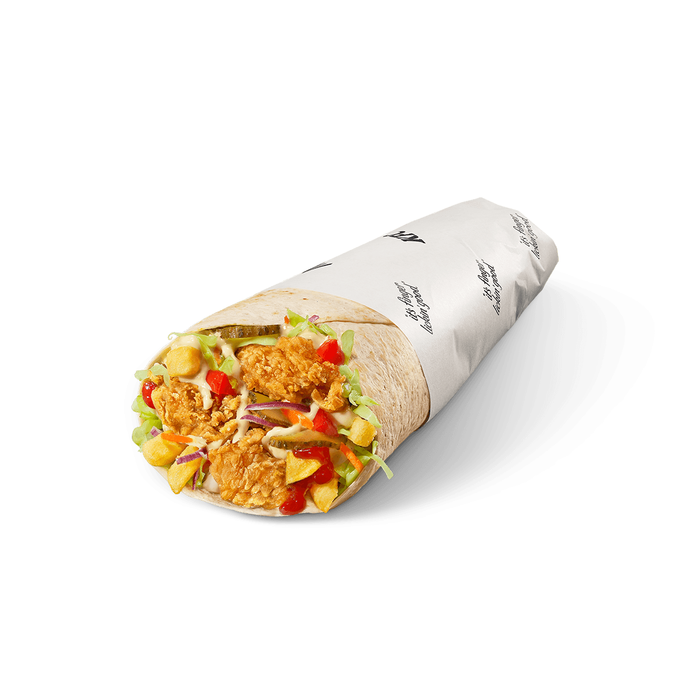

Welcome to Recipe for Shawarma!
This recipe is by ChatGPT. You can use this recipe if you want to try a ChatGPT recipe. This recipe is not officially made by me!
This recipe is by ChatGPT. You can use this recipe if you want to try a ChatGPT recipe. This recipe is not officially made by me!
Slice the chicken breast into thin strips and season with salt, pepper, paprika, and oregano.
Heat a pan over medium heat and add the olive oil.
Cook the chicken, stirring occasionally, until golden and fully cooked (about 7-10 minutes).
Mix the Greek yogurt with the minced garlic and lemon juice.
Warm the pita or tortilla for a few seconds.
Spread the yogurt sauce over the bread.
Add the cooked chicken and chopped vegetables.
Wrap it up and serve immediately.